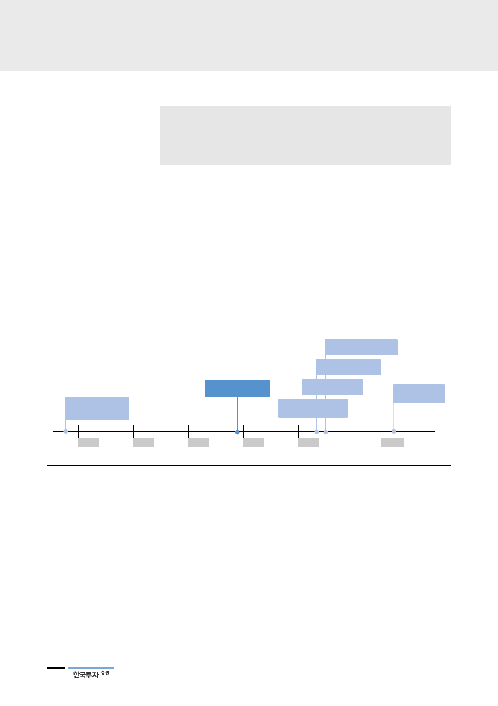

리포트 작성 목적
• 현대중공업지주를 둘러싼 최근의 변화 점검
• 현대중공업지주의 배당 정책 전망
• 현대글로벌서비스가 기대되는 이유
I. 3월부터 봄바람이 불다
최근 현대중공업지주를 둘러싼 변화의 바람이 감지된다. 현대중공업지주는 3월
이후 오너일가의 5.1% 지분 매입, 2018년 현대중공업지주 배당정책 공론화, 1분
기 글로벌서비스의 실적 턴어라운드, 글로벌 로봇업체 KUKA와 MOU 체결, 롯
데케미칼과의 JV인 HPC(Heavy Feed Petrochemical Complex) 설립을 결정했
다. 상기 개별 사안을 점검하고 투자포인트를 점검했다.
[그림 1] 2018년 현대중공업지주의 변화
권오갑 부회장 취임
정기선 부사장 취임
정기선 부사장
지주 지분 5% 확보
오일뱅크, 롯데케미칼
HPC 신설 계획 공시
Kuka와 MOU 체결
글로벌서비스
1분기 turnaround
지주 배당계획 공론화
(간담회)
오일뱅크 IPO
Jan
Feb
Mar
Apr
May
자료: DART, 언론보도, 한국투자증권
2H18
배당 정책으로 주주가치
재고 및 오너일가의
채무상환/증여세 납부 가능
II. 투자포인트 점검
투자포인트 1: 현대중공업지주, 2018년부터 적극적 배당정책 전망
현대중공업지주는 주주가치 재고를 위해 2018년부터배당 정책을 실시할 계획을
밝혔다. 올해 하반기 현대오일뱅크 상장을 통해서 대규모 현금 유입이 예상되고,
향후에도 현대오일뱅크의 호실적과 고배당이 예상되기 때문이다. 주주입장에서는
최대 취약점이 해소되고, 최근 시작된 경영권 승계에서도 현대중공업지주의 배당
이 도움이 될 것으로 판단한다. 지난 3월 정기선 부사장은 KCC가 보유한 현대중
공업지주 5.1%(3,500억원 상당)를 매입했는데, 이를 위해 정몽준 회장/정기선
부사장은 3,500억원을 대출했기에(주식담보대출) 추후 상환이 필요하다. 정기선
2